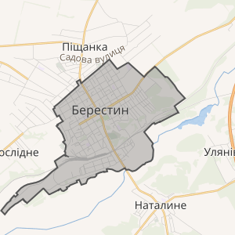
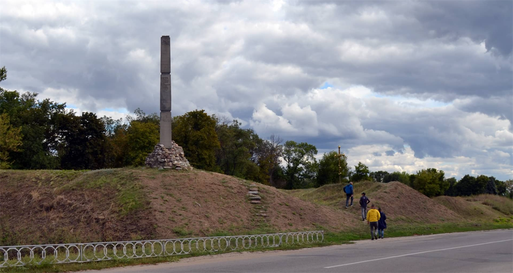
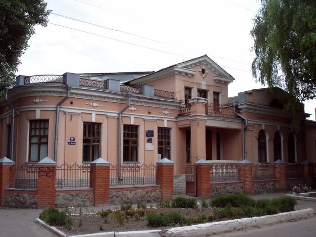
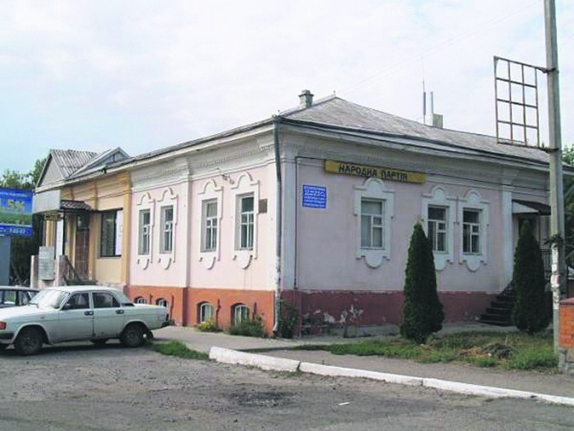

Народився і виріс я в місті Красноград Харківської області. Берестин стоїть на правому березі річки Берестової за 101 км на південний захід від обласного центру — м. Харкова. На протилежному березі річки розкинулося село Наталине; з північного боку місто межує з селом Піщанка. Через місто проходять автомобільна дорога М18 (E105) і залізничні лінії на Дніпро, Харків, Полтаву, Лозову; у місті розташована залізнична станція Красноград. Місто лежить на вододільному плато, що круто спускається до правобережжя долини річки Берестової.
Також в моєму місті є досить небагато пам'яток
|  |  |  |